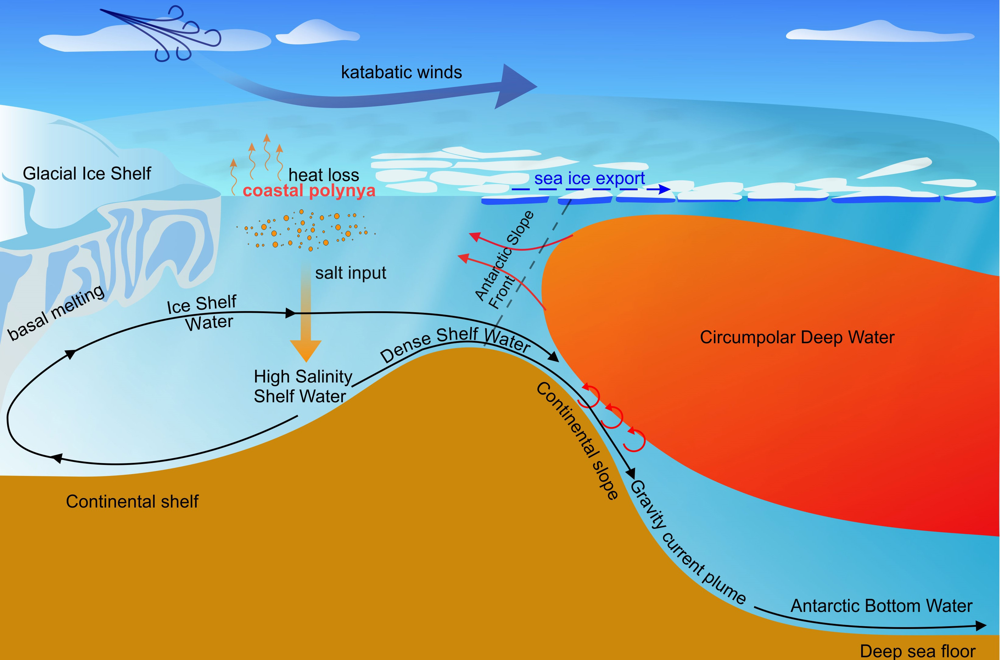

Antarctic ice melt ー it possesses 70% of Earth's freshwater and 90% of the gross ice
The melting of Antarctic ice has been caused by warming ocean waters. Oceanic heat, particularly Circumpolar Deep Water, flows underneath the ice shelves, melting the ice shelves that surround Antarctica from below. As global temperatures rise, the oceans absorb more heat, also leading to the melting of the ice. This causes the ice to thin and break up, allowing glaciers to flow more quickly into the ocean.
Silvano et al. (2023, Frontiers in Marine Science)
In addition to oceanic heat, other factors such as changing atmospheric circulation and sea ice can also contribute to the melting of Antarctic ice. Stronger winds can drift sea ice away from the coast, exposing ice shelves to warmer waters. Warmer air temperatures can also lead to increased melting of the ice at the surface.
NASA
The melting of Antarctic ice is a major concern for scientists and policymakers due to its potential impact on global sea level rise and marine ecosystems. In the upcoming centuries, sea levels could rise by several meters, which would have catastrophic consequences for low-lying areas and coastal cities around the world. Current predictions of future sea-level rise include errors of several meters related to the melting process of the Antarctic ice sheet, and more accurate predictions are being discussed as a societal demand.
We are working to predict future rates of ice melt with more accuracy and evaluate potential impacts on global sea level rise, ocean overturning circulation, and marine ecosystems.
Related studies
- Yamazaki, K., Aoki, S., Katsumata, K., Hirano, D., & Nakayama, Y. (2021). Multidecadal poleward shift of the southern boundary of the Antarctic Circumpolar Current off East Antarctica. Science Advances, 7(24), eabf8755.
- Hirano, D., Tamura, T., Kusahara, K., Fujii, M., Yamazaki, K., Nakayama, Y., ... & Aoki, S. (2023). On-shelf circulation of warm water toward the Totten Ice Shelf in East Antarctica. Nature Communications, 14(1), 4955.
- Aoki, S., Takahashi, T., Yamazaki, K., Hirano, D., Ono, K., Kusahara, K., ... & Williams, G. D. (2022). Warm surface waters increase Antarctic ice shelf melt and delay dense water formation. Communications Earth & Environment, 3(1), 142.